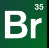
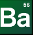
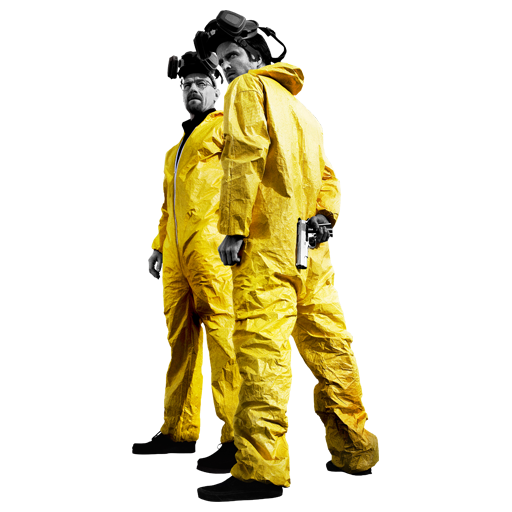
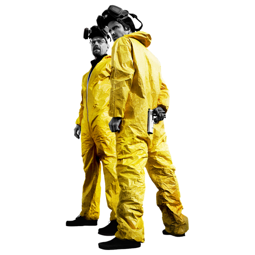

Ik heb verschillende hobby's die ik leuk vind, zoals sporten in de sportschool, gamen, voetballen en netflixen. Mijn favoriete games zijn: Fifa, CoD, Overwatch en story games. Mijn favoriete series zijn als volgt:  ..eaking c d, Better Call Saul, The Boys, Peaky Blinders en als laatste Prison Break.
 
